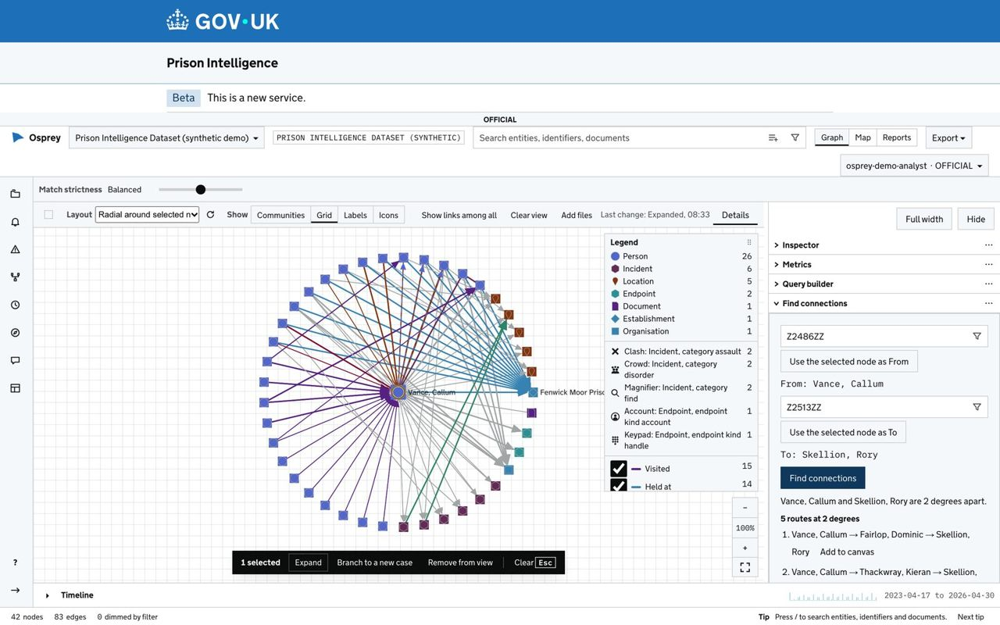
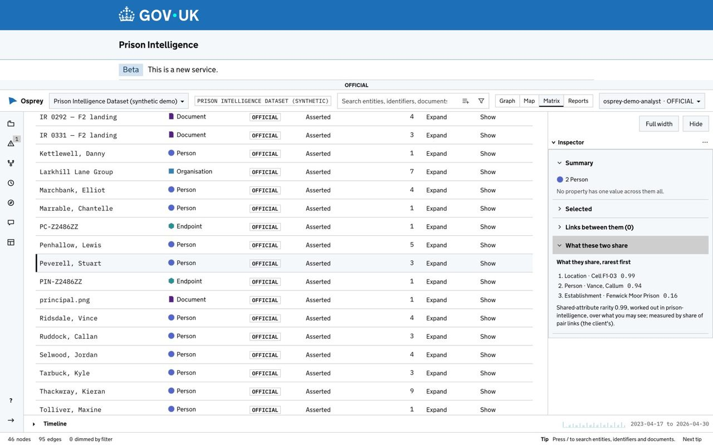
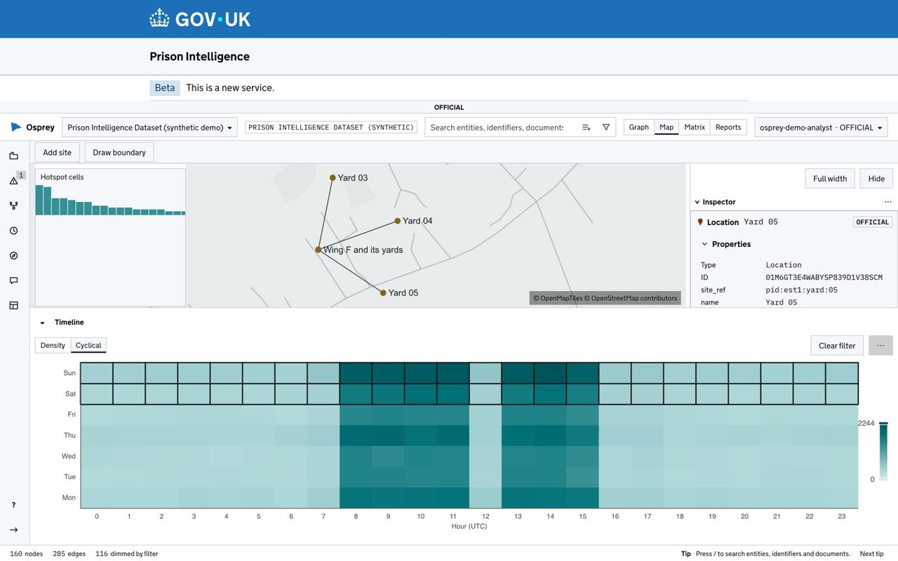
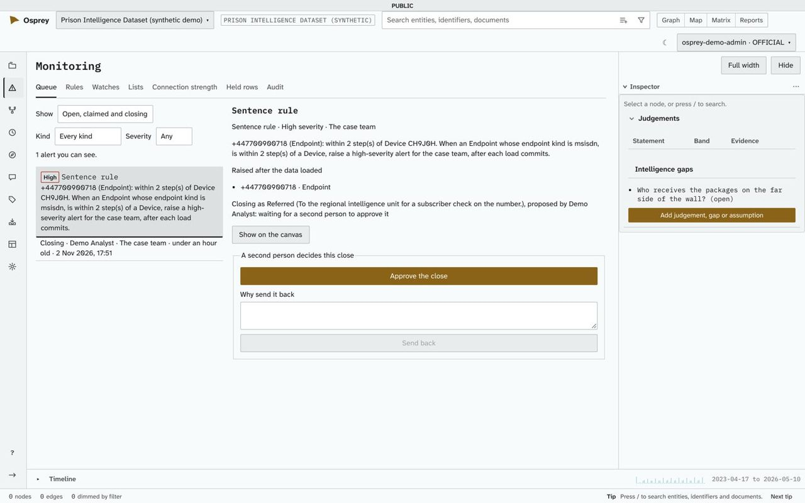
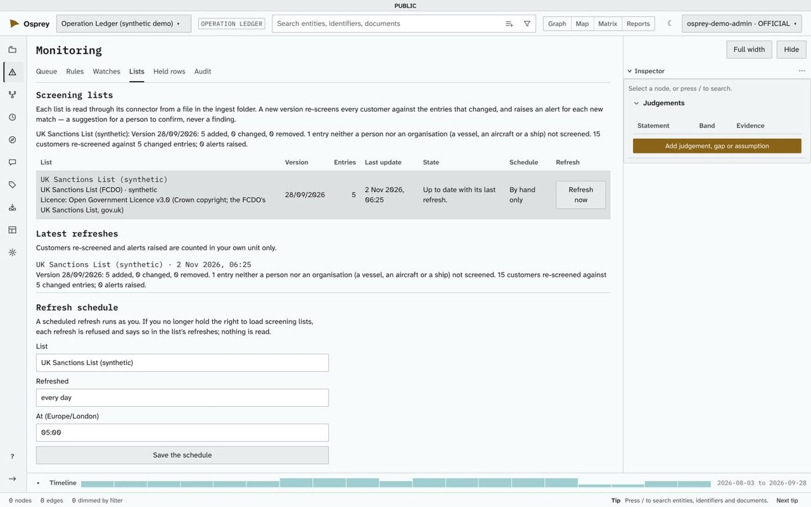
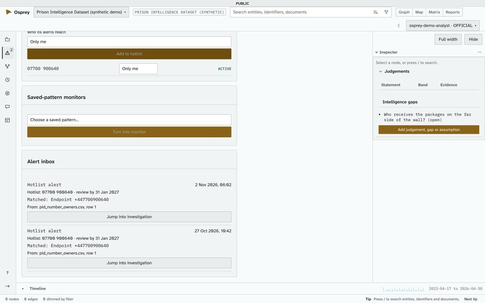
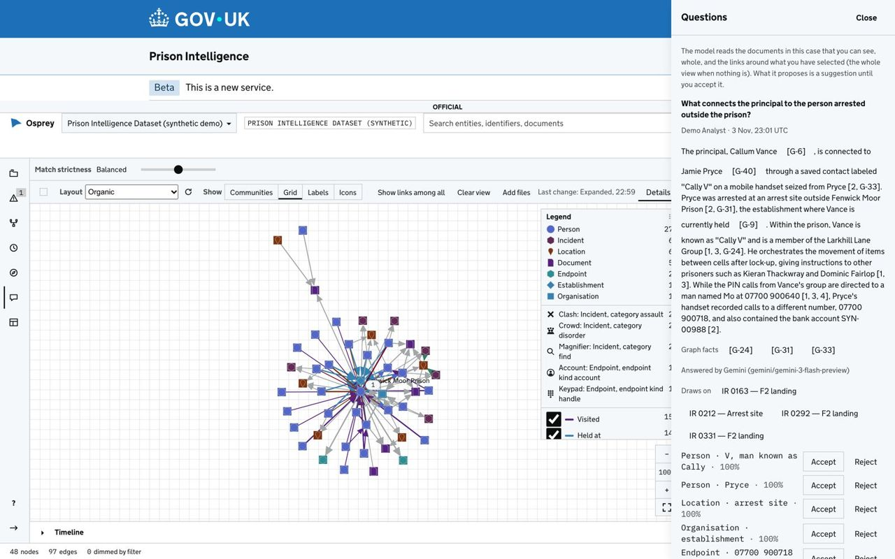

People, roles and teams
Built-in roles (Analyst, Data Engineer, Administrator, Reports Viewer, Rule author) and roles you define. No one can give more than they hold.
Features · release v0.5.1
Everything on this page is built and in release v0.5.1, except the section headed "On main, coming with the next release". Screens are from demonstration deployments with synthetic data, and are being replaced.



The gate into the network. Loaded data reaches a dataset only through a pipeline someone published.




The analysis canvas shows what the data says. A drawing board is where an analyst writes down what they know that the data does not yet say.

Built-in roles (Analyst, Data Engineer, Administrator, Reports Viewer, Rule author) and roles you define. No one can give more than they hold.
OspreyFlow's own accounts. On a server of your own, your organisation's account through Microsoft Entra ID, ADFS or another OpenID Connect provider.
Handling markings on every record, a highest allowed marking per dataset, and reads filtered in the store.
Who did what and when, including every export, every approval and every change to what may leave the deployment.
Apache Superset embedded in a case with the same sign-in, reading a reporting feed.
Signed releases. On one computer or a server of your own, installed from a release, an update is backed up first and rolled back on failure; Enterprise is updated by installing the new release.
A profile for shared government Kubernetes platforms: one namespace, the platform's managed services, non-root containers and a single-copy shape for a proof of concept, with sign-in through Microsoft Entra ID. Installed and checked on a test cluster, not yet on a platform. In this release, loads there are started by hand and reporting is not on it; the administration guide's section 6a has every limit.
Three tiers, separated by four typed ports, so an engine can be swapped without touching what sits above it.
React and TypeScript. Sigma.js and Graphology for the network, MapLibre GL with PMTiles for maps, Apache ECharts for charts, GOV.UK Frontend for the GOV.UK theme.
Python and FastAPI. The API, access control, entity resolution, extraction and model routing. Stateless.
ArcadeDB for the graph, DuckDB or ClickHouse for analytics, OpenSearch or PostgreSQL for search, PostgreSQL for cases, roles and audit, Valkey, S3-compatible object storage or Azure Blob, LiteLLM as the model gateway.
The four ports are the graph, analytics, compute and models. An adapter is supported once it passes the same conformance suite as every other adapter behind that port.
These are merged in development and not in release v0.5.1. They arrive with the next release.
Want help to run it? Solirius Reply offers pilots, builds and support: ospreyflow.net.